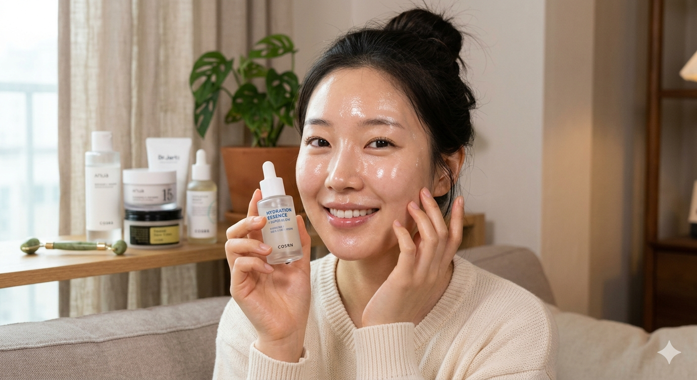

A Coreia do Sul revelou ao mundo que beleza começa por dentro, com alimentação consciente e rituais de skincare. Descubra como alcançar a tão desejada "glass skin" e viver com leveza e brilho natural.

O segredo da pele coreana não é magia, é consistência. Cada passo tem um propósito, cada produto um ativo. Aprenda a rotina completa e adapte ao seu biotipo.
O primeiro passo remove maquiagem, protetor solar e oleosidade sem agredir a barreira cutânea. Massageie por 60 segundos em movimentos circulares e enxágue com água morna. A emulsificação é o sinal de que está funcionando.
Ingredientes favoritos:
Óleo de rosa mosqueta Óleo de camélia Óleo de jojobaA limpeza dupla garante que absolutamente nada fique na pele. O gel ou espuma remove o resíduo do óleo e restos microscópicos. Prefira pH baixo (4,5–5,5) para preservar o manto ácido natural.
pH balanceado Extrato de arroz Chá verdeDiferente dos tônicos tradicionais, o tônico coreano é hidratante e prepara a pele para absorver os próximos passos. Aplique com as mãos em movimentos de pressão suave.
Ácido hialurônico Extrato de flor de cerejeira MelA essência é o produto mais coreano de todos. Mais leve que sérum, penetra profundamente nas camadas da pele acelerando renovação celular, uniformizando o tom e dando o famoso "glow" de dentro para fora.
Niacinamida Galactomyces Centella asiaticaSérum: concentrado de ativos para tratar problemas específicos (manchas, textura, acne). Aplique antes da hidratação.
Máscara de papel: use 2–3x por semana. 20 minutos de tratamento intensivo. Guarde o soro restante no pescoço e colo.
Protetor solar: o passo mais importante de todos! FPS 50+ todos os dias, mesmo em dias nublados. É o anti-aging número 1.
FPS 50+ Sheet Mask Retinol (noturno) CeramidasFermentado de repolho com especiarias. Rico em lactobacilos que equilibram a microbiota intestinal, diretamente ligada à saúde da pele.
Mingau nutritivo e de fácil digestão, consumido para curar e restaurar o corpo. Base perfeita para períodos de estresse ou adoecimento.
O chá de cevada torrada é a bebida cotidiana coreana, hidratante e antioxidante. O yuja (limão-coreano) é carregado de vitamina C e clareia a pele.
Salmão, cavala e as algas marinhas (miyeok, gim) são ricas em ômega-3 e minerais que fortalecem a barreira lipídica da pele e reduzem inflamação.
Acorde sem alarme sempre que possível. Tome um copo de água morna com limão. Faça a rotina matinal de skincare com calma, como um ritual, não uma tarefa.
O modelo coreano de refeição com múltiplos acompanhamentos pequenos garante diversidade nutricional naturalmente. Sem dieta restritiva só equilíbrio e sabor.
Os coreanos tratam o banho como terapia. Esfoliação com Itallie (toalha coreana), sauna e banho frio, o trio que renova a pele e acalma o sistema nervoso.
A noite é quando a pele se regenera. Máscara noturna com retinol ou péptidos sobre a hidratante sela todos os ativos e amplifica os resultados enquanto você dorme.
Em vez de uma hidratação pesada, aplique 3–4 camadas finas de produtos leves. A pele absorve mais e o resultado é muito mais duradouro e natural.
SkincareFermente a água do cozimento do arroz por 24h e use como tônico. Rico em inositol, clareia manchas, minimiza poros e dá luminosidade. Segredo milenar coreano.
DIYCongele chá verde em formas de gelo e massageie o rosto pela manhã por 2 minutos. Reduz vermelhidão, fecha os poros e ativa a circulação, rosto desperto instantaneamente.
DIYAplique todos os produtos com movimentos de batidinha suave (patting) com as pontas dos dedos. A fricção irrita a pele. O patting estimula circulação e absorção.
TécnicaA tendência "skip care" é simplesmente usar menos produtos, porém, mais eficazes. Nos dias de pele sensível, um bom limpador e protetor solar já são suficientes.
FilosofiaEstudos coreanos mostram que 7–8h de sono produzem mais efeito antienvelhecimento do que qualquer produto. É durante o sono que o hormônio do crescimento repara a pele.
Estilo de vidaDicas de skincare, receitas funcionais coreanas e segredos de beleza diretamente no seu e-mail — sem exageros, só o essencial.
Sem spam · Cancele quando quiser · É gratuito